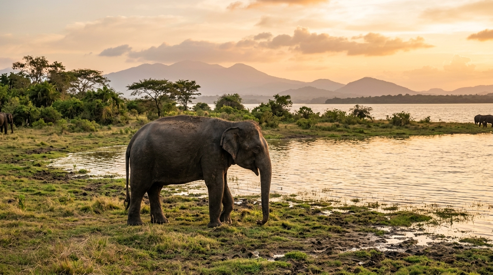

HEC COEXISTENCE
calendar_month
October 13, 2026
•
Reuters
In Sri Lanka, human-elephant conflict takes deadly toll
Frontline coexistence report by Reuters: Investigating human-elephant encounters, agricultural interface barriers, and escalating casualties across dry-zone agricultural heartlands.